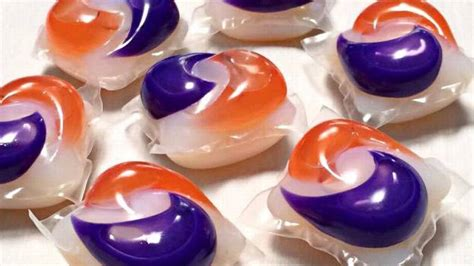

Welkomswoord
Hallo, welkom op onze website! Wij zijn Eva, Lotte en Yannick en wij houden van koken. Net zoals jij, zijn wij altijd op zoek naar leuke nieuwe recepten om uit te proberen en lekker van te smullen. Daarom hebben we deze website gemaakt, om onze leuke recepten te delen.
Introductie
Receptenvinder is een handige manier om recepten te vinden die zelfs jij kan maken! bij elk recept is een moeilijkheidsniveau gegeven zodat jij het perfecte recept kan vinden. Ook kun je zelf de recepten beoordelen, zodat andere bezoekers weten wat voor heerlijke maaltijd het is.
Recept van de Week
Tidepods, Sterf. Geschikt voor kinderen.
